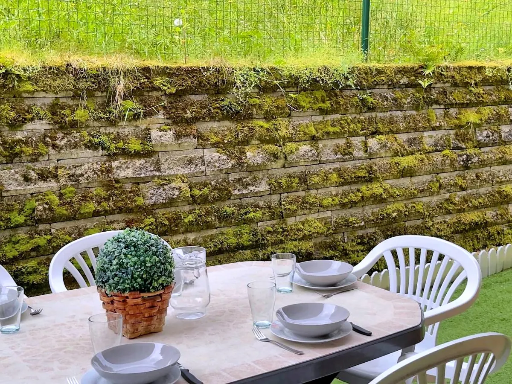

Salón comedor
Un espacio abierto para reunirse
La puerta acristalada da paso directo al jardín, así que el salón y el exterior funcionan como un solo espacio.
- Sofá y sillones
- Mesa de comedor
- Televisión y radio
- Salida directa al jardín
60 m² en una planta, con dos dormitorios, dos baños, cocina, salón y jardín.

Salón comedor
La puerta acristalada da paso directo al jardín, así que el salón y el exterior funcionan como un solo espacio.

Cocina
Totalmente equipada y con salida a la terraza, para sacar la comida al jardín sin dar la vuelta.

Dormitorios
Una con cama de matrimonio y otra con dos camas individuales, con ventana hacia la ladera verde.

Baños
Uno con bañera y mampara, el otro con plato de ducha. Así nadie espera por la mañana.

Jardín y terraza
Césped, comedor exterior para seis y una zona de sofás junto al muro de piedra, con la ladera verde al fondo.
Todo lo que encontrarás al llegar, por estancias.
Pasa el ratón por la foto, o tócala en el móvil, para ampliar.

Toca una estancia para ver cómo es y qué tiene.
Zona de día
Un solo espacio para estar y comer, con puerta acristalada directa al jardín.
Esquema orientativo de la distribución, no a escala.